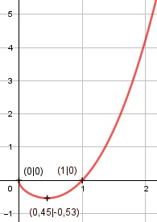

Aufgabe 129 f(x) = (x2 - 1) * Produktregel erste Ableitung: u = x2 - 1, u' = 2x v = = x0,5, v' = 0,5 * x-0,5 f'(x) = 2x * x0,5 + 0,5 * x-0,5 * (x2 - 1) 0,5 * x2 f'(x) = 2x * x0,5 - ----------- x0,5 2x * x + 0,5 * x2 - 0,5 f'(x) = -------------------------- x0,5 2,5x2 - 0,5 f'(x) = ------------- x0,5 5x2 - 1 f'(x) = ----------- 2 * x0,5 Quotientenregel zweite Ableitung: u = 5x2 - 1, u' = 10x v = 2 * x0,5, v' = 2 * 0,5 * x-0,5 = x-0,5 10x * 2 * x0,5 - x-0,5 * (5x2 - 1) f''(x) = ------------------------------------ (2 * x0,5)2 5x2 - 1 20x * x0,5 - --------- x0,5 f''(x) = ------------------------ 4x 20x2 - 5x2 + 1 15x2 + 1 f''(x) = ----------------- = ---------- 4x * x0,5 4x1,5 Zur Beurteilung, ob f'''(x) ≠ 0: (Begründung siehe Aufgabe 105) u = 15x2 - 1, u' = 30x u' 30x f'''(x) = --- = ---------- ≠ 0 für alle x > 0 v (4x)2.5 x muss ≥ 0 sein, wegen Quadratwurzel. Definitionsbereich: 0 ≤ x < ∞ Verhalten im Unendlichen: f(x) = (x2 - 1) * geht gegen ∞ für x --> ∞ Wertebereich: f(x) wird dann am kleinsten, wenn x = 0,45 (Extremum) f(0,45) = -0,53 --> -0,53 ≤ f(x) < ∞ Symmetrie: f(-x) = ((-x)2 - 1) * f(-x) = (x2 - 1) * ≠ f(x) --> keine Achsensymmetrie -f(-x) = -(x2 - 1) * ≠ f(x) --> keine Punktsymmetrie Nullstellen: f(x) = 0 (x2 - 1) * x0,5 = 0 x2 - 1 = 0 |+1 x2 = 1 |ⱱ x1,2 = ± 1 x2 = -1 außerhalb des Definitionsbereiches x0,5 = 0 x3 = 0 N1(0|0), N2(1|0) Schnittpunkt mit der y-Achse: x = 0 f(0) = (02 - 1) * 00,5 = 0 Sy(0|0) Extrempunkte: f'(x) = 0 5x2 - 1 f'(x) = ---------- 2 * x0,5 5x2 - 1 = 0 |+1 5x2 = 1 |:5 x2 = 0,2 |ⱱ x1,2 = ± 0,45 x2 = -0,45 außerhalb des Definitionsbereiches x1 = 0,45 f(0,45) = (0,452 - 1) * 0,450,5 = -0,53 15 * 0,452 + 1 f''(0,45) = ---------------- > 0 4 * (0,45)1,5 --> Tiefpunkt(0,45|-0,53) Wendepunkte: f''(x) = 0 15x2 + 1 f''(x) = ---------- |*4x1,5 4x1,5 15x2 + 1 = 0 |-1 15x2 = - 1 |:15 x2 = -0,067 |ⱱ --> keine Lösung --> keine Wendepunkte Graph:
